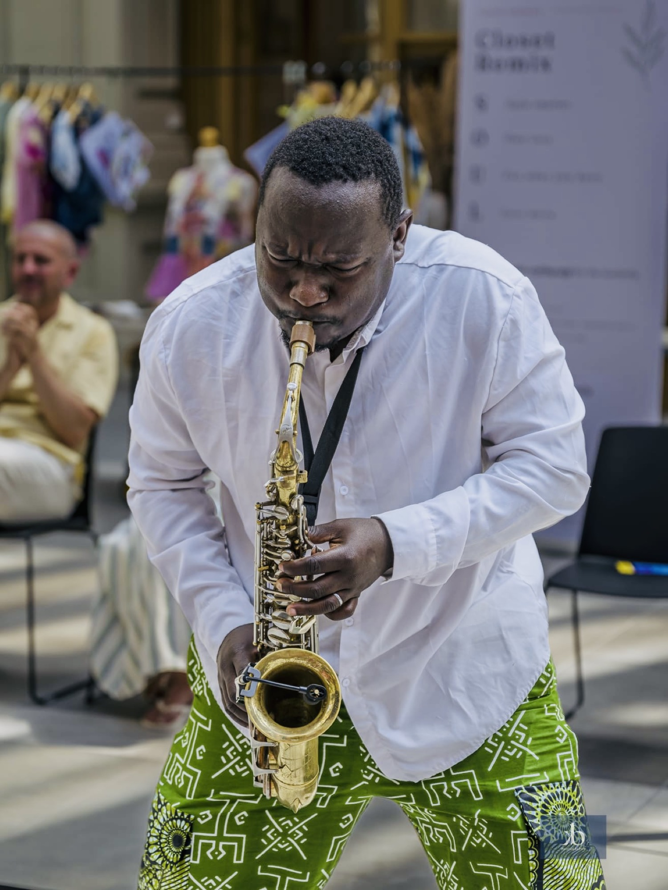
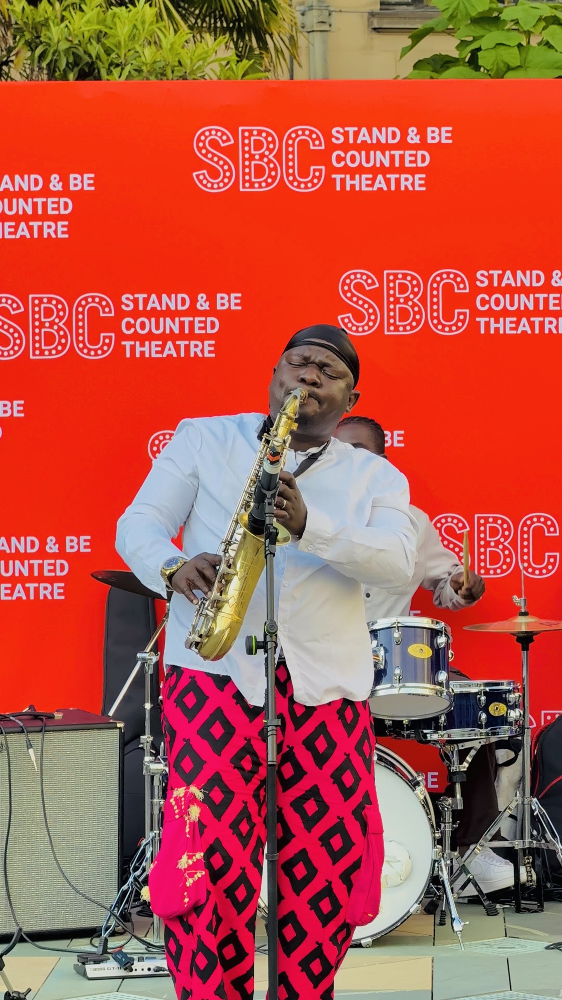

01
Saxophone
The horn that carries the breath — soaring lines, warm tone, the centre of every set.
II The Statement
Music that connects people. Culture that builds communities. Performance that leaves lasting memories.
From concert stages and theatres to festivals, community spaces and international cultural events, Olamide Sax creates immersive artistic experiences where Afro-fusion music, Yoruba heritage and participatory performance come together to inspire connection, wellbeing and celebration.
III The Roots
2010 —
It began with percussion. Olamide first found his voice in Yoruba percussion — the cord/omele, the djembe, the omele bàtá and the talking drum — learning to speak in rhythm before melody. That grounding in the pulse of home became the foundation for the Afro-fusion he plays today: saxophone, voice and keys carried on the same ancestral breath.

The rhythm of home
V Featured Performance

World Record Football Scarf Procession
VI Featured Video

VII The Live Wall




VIII In Their Words
Olamide Sax commands the spotlight — a stirring, Afro-fusion performance that holds a room.
Eko Heritage Awards Best Instrumentalist of the Year — Winner, 2026 See recognition →
New Telegraph Olamide Sax Delivers Afro-Fusion Performance at BME United Doncaster Event Read →
The Nation Olamide Sax Thrills Guests at Open Mic Read →
New Telegraph Olamide Sax Commands Spotlight Stage in Sheffield, Delivers Stirring Performance Before Lord Mayor Read →
X The Invitation
Available for festivals, theatre productions, concerts, participatory arts, creative health projects, cultural events, workshops and more — UK & international.
Book Olamide